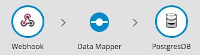
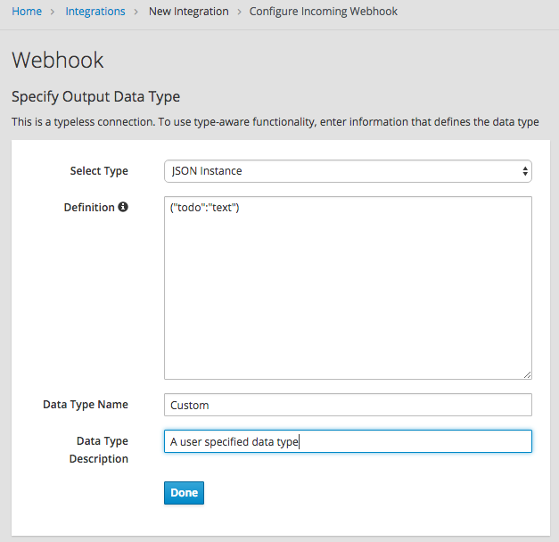
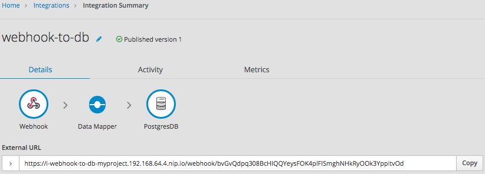
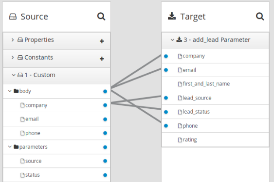

How to specify HTTP requests
The following examples show how to specify HTTP requests for the {prodname} Webhook.
Consider an integration that starts with a Webhook connection and then creates a row in the Todo table of the {prodname}-provided database:

During creation of this integration, when you add the Webhook start
connection, you specify its output data type with a JSON instance that
has this content: {"todo":"text"}:

When you add the PostgresDB connection as the finish connection, you select the Invoke SQL action and specify this SQL statement:
INSERT INTO TODO (TASK) VALUES (:#TASK)
After you add the database connection, you add a mapping step:

You save and publish the integration. When it is running, you can copy the external URL that {prodname} provides:

To understand the parts of the external URL, consider this sample URL:
https://i-webhook-to-db-myproject.192.168.64.4.nip.io/webhook/bvGvQdpq308BcHIQQYeysFOK4plFISmghNHkRyOOk3YppitvOd
| Value | Description |
|---|---|
|
{prodname} always inserts this value at the beginning of the URL. |
|
The name of the integration. |
|
The OpenShift namespace that contains the pod that is running the integration. |
|
The DNS domain that is configured for OpenShift. This indicates the {prodname} environment that is providing the webhook. |
|
Appears in each Webhook connection URL. |
|
Webhook connection token that {prodname} provides when you add a Webhook connection to an integration. The token is a random string that provides security in that it makes the URL hard to discern, which prevents anyone else from sending a request. In a request, you can specify the token that {prodname} provides or you can define your own. If you define your own, ensure that it is hard to guess. |
As you can see in the external URL, {prodname} constructs the host name from the name of the integration, the name of the OpenShift namespace, and the OpenShift DNS domain. {prodname} removes illegal characters and converts spaces to hyphens. In the sample external URL, this is the host name:
https://i-webhook-to-db-myproject.192.168.64.4.nip.io
To use curl to invoke the webhook, you would specify the command as follows:
curl -H 'Content-Type: application/json' -d '{"todo":"from webhook"}' https://i-webhook-to-db-myproject.192.168.64.4.nip.io/webhook/bvGvQdpq308BcHIQQYeysFOK4plFISmghNHkRyOOk3YppitvOd
-
The
-Hoption specifies the HTTPContent-Typeheader. -
The
-doption sets the HTTP method toPOSTby default.
Execution of this command triggers the integration. The database
finish connection inserts a new task into the tasks table. To see this,
display the Todo app at, for example, https://todo-myproject.192.168.64.4.nip.io,
Click Update and you should see from webhook as a new task.
For this example, consider the same integration as in the previous example:
But in this example, you define the Webhook connection output data type by specifying a JSON schema with this content:
{
"type": "object",
"definitions": {},
"$schema": "http://json-schema.org/draft-07/schema#",
"id": "io:syndesis:webhook",
"properties": {
"parameters": {
"type": "object",
"properties": {
"source": {
"type": "string"
},
"status": {
"type": "string"
}
}
},
"body": {
"type": "object",
"properties": {
"company": {
"type": "string"
},
"email": {
"type": "string"
},
"phone": {
"type": "string"
}
}
}
}
}In this JSON schema:
-
The
idmust be set toio.syndesis.webhook. -
The
parameterssection must specify the HTTP query parameters. -
The
bodysection must specify the body content and it can be as complex as you need it to be. For example, it can define nested properties as well as arrays.
This provides the information that the Webhook connector needs to prepare the content for the next step in the integration.
To use curl to send an HTTP request, invoke a command such as the following:
curl -H 'Content-Type: application/json' -d '{"company":"Gadgets","email":"sales@gadgets.com","phone":"+1-202-555-0152"}'https://i-webhook-params-to-db-myproject.192.168.42.235.nip.io/webhook/ZYWrhaW7dVk097vNsLX3YJ1GyxUFMFRteLpw0z4O69MW7d2Kjg?source=web&status=new
When the Webhook connection receives this request it creates a JSON instance that looks like this:
{
"parameters": {
"source": "web",
"status": "new"
},
"body": {
"company": "Gadgets",
"email": "sales@gadgets.com",
"phone": "+1-202-555-0152"
}
}It is this internal JSON instance that enables the following mapping:

To trigger an integration with a GET request that does not provide input data,
specify the Webhook connection output data shape as a JSON instance with the
definition '{}'. You can then invoke the following curl command, which
does not specify query parameters:
curl 'https://i-webhook-params-to-db-myproject.192.168.42.235.nip.io/webhook/ZYWrhaW7dVk097vNsLX3YJ1GyxUFMFRteLpw0z4O69MW7d2Kjg'
You can change the previous POST example to
send a GET request with query parameters but no body. You would
specify the Webhook connection output data shape as a JSON schema with the
definition as shown below.
{
"type": "object",
"definitions": {},
"$schema": "http://json-schema.org/draft-07/schema#",
"id": "io:syndesis:webhook",
"properties": {
"parameters": {
"type": "object",
"properties": {
"source": {
"type": "string"
},
"status": {
"type": "string"
}
}
}
}
}Here is the curl command that sends the GET request:
curl 'https://i-webhook-params-to-db-myproject.192.168.42.235.nip.io/webhook/ZYWrhaW7dVk097vNsLX3YJ1GyxUFMFRteLpw0z4O69MW7d2Kjg?source=web&status=new'`